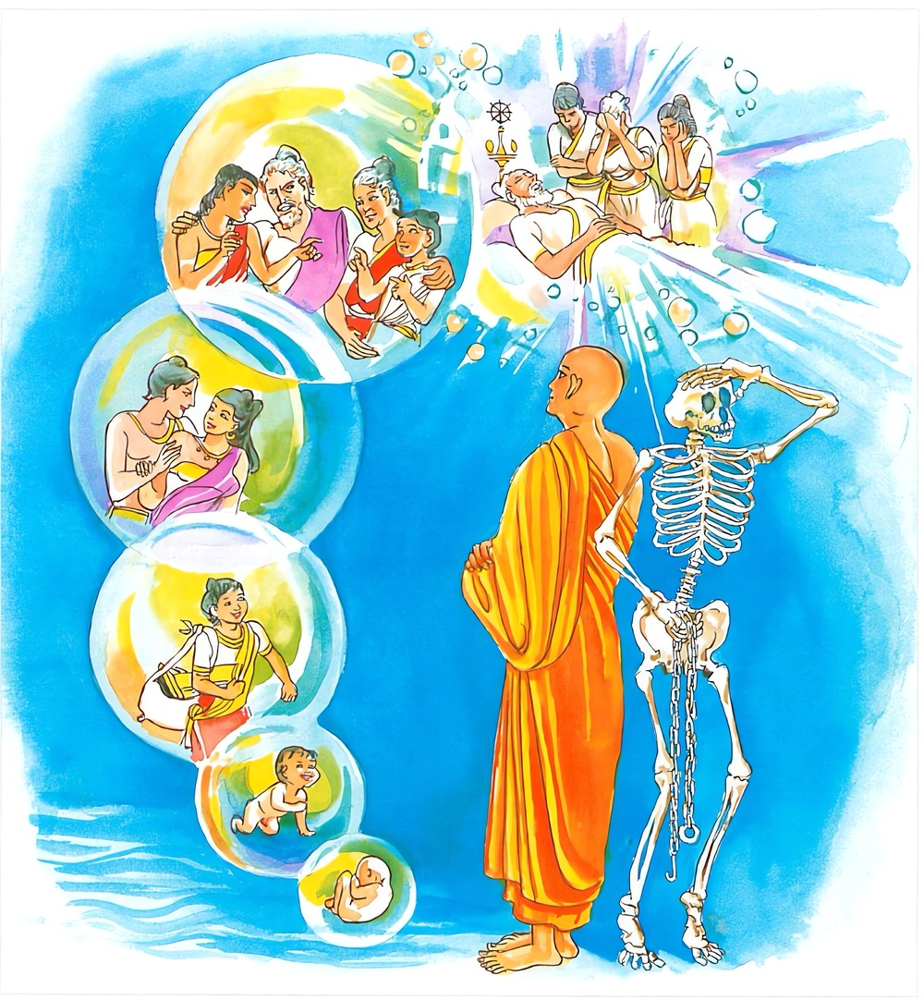

13-3 විදර්ශකභික්ෂූන් වහන්සේ
මෙම කතාව ධම්මපද අටුවාවෙන් ද කියවන්න.
යථා බුබ්බුලකං පස්සෙ යථා පස්සෙ මරීචිකං
එවං ලොකං අවෙක්ඛන්තං මච්චුරාජා න පස්සති.
දිය බුබුලක් (ඉපිද වහා නස්නේ යැ යි තුච්ඡ යැ යි අසාර යැ යි) යම්සේ බලා ද, (පවනින් සැලුනු ඉරු රැස යැ යි කියන ලද) මිරිඟුව ගන්නට නොනිසි යැ යි දක්නේ ද, එ පරිද්දෙන් ම (ස්කන්ධායතනධාතුසංඛ්යාත) ලෝකය (ඉපිද වහා නස්නේ ය, තුච්ඡ ය, අසාර ය, ආත්ම ආත්මීය භාවයෙන් ගන්නට නො නිසි යැ යි) නුවණැසින් බලන තැනැත්තහු මෘත්යුරාජ තෙම (මරණ තෙම) (තමාට අවිෂය වූ නිවන් පුරයට ගිය හෙයින්) නො දක්නේ ය.

පන්සියයක් පමණ විදර්ශක භික්ෂූන් වහන්සේ බුදුරජුන් වෙතින් කමටහන් ගෙණ වනයට ගියහ. එහිදී ඔවුහු රහත් වන්නට සිතා මහත් ඕනෑකමින් කමටහන් වැඩූහ. එහෙත් විශේෂාධිගමයක් ලැබීමෙහි අපොහොසත් වූ ඔවුහු නැවතත් විශේෂ කොට කමටහන් කියවා ගන්නට බුදුරජුන් වෙත එන්නෝ අතර මග දී මිරිඟුවක් දැක එහි සිත් හසුරුවමින් ජේතවනය බලා ආහ. ඔවුන් දෙව්රමට ඇතුල් වූ වේලෙහි තද වැස්සෙක් වසින්නට වන. දොරපිළ ඒ ඒ තැන සිටගත් ඒ මහණෝ වැසි දියෙහි නැගී බිදී යන දිය බුබුලු දැක “අපගේ සිරුරද ඉපිද නැසෙන බැවින්, මේ නැගී බිදී යනු දිය බුබුලු වැනි” යි සිතන්නට වූහ. බුදුරජානන් වහන්සේ ගඳකිළියෙහි වැඩහුන් සේක් ඒ මහණුන් බලා උන් හා කතා කරමින් ආලෝකයක් පතුරුවා මේ ධර්මදේශනාව කළ සේක.
යථා බුබ්බුලකං පස්සෙ යථා පස්සෙ මරීචිකං,
එවං ලොකං අවෙක්ඛන්තං මච්චුරාජා න පස්සතී ති.
දිය බුබුලක් යම් සේ බලා ද, මිරිඟුවක් යම්සේ බලාද මරරජ තෙමේ එසේ ලෝකය බලන්නහු නො දක්නේ ය.
බුබ්බුලකං යථා පස්සෙ = දිය බුබුල යම්සේ බලා ද.
මරීචිකං යථා පස්සෙ = මිරිගුවක් යම්සේ බලා ද.
මච්චුරාජා එවං ලොකං අවෙක්ඛන්තං න පස්සති = මරරජ තෙමේ එසේ ආත්මභාවය දක්නහු නො දකී.
ආත්මභාවසඞ්ඛ්යාත ලෝකය, පරමාර්ත්ථ විසින් ස්කන්ධධාතු ආයතනැයි ගත යුතු ය. එය ඉපිද ඒ හා ම නස්නේ ය. දියෙහි හට ගන්නා දිය බුබුල හට ගැණීම හාම නැසෙන්නා සේ ය ඒ නස්නේ. එහෙයින් එය සිස් ය. හරයෙක් නැත. තමන්ගේ යි ගන්නට කිසිත් නැත. දෙව් බඹ මිනිස් තිරිසන් ඈ නන් අයුරෙන් පෙණේ. ඈත පෙනෙන මිරිඟුව ගෘහ සංස්ථානාදි වශයෙන් පෙණෙන්නා සේ ය ඒ පෙණෙනුයේ. ලං ලංවත් මිරිගුවෙහි ගන්නට කිසිත් නැත්තා සේ මෙහි දෙව් බඹ මිනිස් තිරිසන් ඈ විසින් ගන්නට කිසිත් නැත්තේ ය. එහෙයින් සිස් ය. නිසරු ය, යි විදර්ශනා ඥානයෙන් දක්නේ මරරජු විසින් නො දක්නා ලැබේ.
ආත්මභාවය දියබුබුලක් මිරිඟුවක් වැනි කොට බලන්නා හට ආත්ම භාවය කෙරෙහි අනිත්ය - දුඃඛ - අනාත්ම දර්ශනයෝ පහළ වෙත්. “ යථා උදකබුබ්බුලකං අසාරං නිස්සාරං සාරාපගතං, යථා මරීචි අසාරා නිස්සාරා සාරාපගතා, එවමෙව රූපං අසාරං නිස්සාරං සාරාපගතං, වෙදනා -පෙ- සඤ්ඤා -පෙ- සංඞ්ඛාරා -පෙ- විඤ්ඤාණං අසාරං නිස්සාරං සාරාපගතං නිච්චසාරසාරෙන වා සුභසාරසාරෙන වා සුඛසාරසාරෙන වා අත්තසාරසාරෙන වා නිච්චෙන වා ධුවෙන වා සස්සතෙන වා අවිපරිණාමධම්මෙන වා” යනු සාධකසූත්ර යි.
“සිරුර අසාර ය නිස්සාර ය සාරයෙන් තොර ය” යි බලන්නහුට සිරුරෙහි උපදවා ගත් නිත්ය සුඛ ආත්මදර්ශනයෝ පහවයෙත්. “ අනිච්චතො පස්සන්තො නිච්චසඤ්ඤං පජහති. දුක්ඛතො පස්සන්තො සුඛසඤ්ඤං පජහති. අනත්තතො පස්සන්තො අත්තසඤ්ඤං පජහති” යනු ඒ කීහ.
දිය මතුපිට නැගී බිඳී යන ගොලාකාර වූ දිය බිඳ බුබ්බුලක යි කියනු ලැබේ. පවනින් සැලෙන හිරුරැස් මරීචි නමි. එය දුටු සිවුපාවෝ එය ජල යැයි සලකා දුවගොස් විනාශයට පත් වෙත්.
එවං ලොකං අවෙක්ඛන්තං = මෙසේ ලෝකය බලන්නහු.
පංචස්කන්ධය මෙහි ලෝක නමි. එසේ නම් කළේ පංචස්කන්ධය නැසෙන වැනසෙන බැවිනි. පංචස්කන්ධය අනිත්ය, දුඃඛ, අනාත්ම යන තිලකුණට නගා බලන්නේ අවෙක්ඛන්ත නමි. පංචස්කන්ධයෙහි වූ අනිත්යාදිලක්ෂණ තතුසේ දැක හැක්කේ විදර්ශනාඥානයට ය. එහෙයින් විදර්ශනාඥානයෙන් පංචස්කන්ධය බලන්නේ මෙහි අදහස් කරණ ලද්දේ ය.
දියබුබල හා මිරිඟුව ඉපිද නස්නා බැවින් සිස් ය, අසාරය යි දක්නා සේ යෝගීජන තෙමේ පංචස්කන්ධය ඉපිද නස්නා බැවින් සිස් ය, අසාර ය යි දකියි. මේ දැකුම් දෙක මේ අතින් සමාන බව එවං යන්නෙන් පැහැදිලි කළහ.
මච්චුරාජා න පස්සති = මරරජ තෙමේ නො දකියි.
විදර්ශනාඥානයෙන් ඥානවත් යෝගී තෙමේ පංචසස්කන්ධයෙහි දොස් දැක එය හරින්නේ ය. එයින් මරණයෙන් මිදෙන්නේ ය. නිවන් පසක් කරන්නේ ය. නිවණ මරණයට තැන් නො වේ. අමත, අච්චුත යන නම් නිවණ කියන්නට යෙදුනේ ද එහෙයිනි. මෙහි මරණය ම මච්චුරාජ යි කියන ලද ය.
ධර්මදේශනාවගේ අවසානයෙහි ඒ භික්ෂුහු උන්හිටිතැනදී ම රහත් වූහ.
විදර්ශකභික්ෂු වස්තුව නිමි.